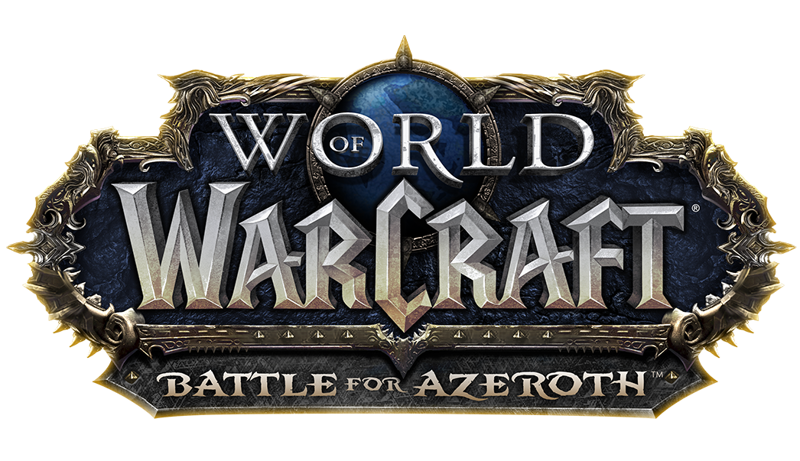

Azeroth paid a terrible price to end the apocalyptic march of the Legion’s crusade—but even as the world’s wounds are tended, it is the shattered trust between the Alliance and Horde that may prove hardest to mend. As the flames of war threaten to engulf the land, the Rise of Azshara update calls upon you to end an ancient threat, and continue to champion your faction's cause.
Download Game